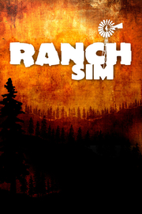

Ranch Simulator
Detalles
|  | |
| Tiempo de juego | No Jugado |
| Última actividad | Nunca |
| Añadido | 11/13/2024 0:35:38 |
| Modificado | 11/13/2024 1:06:04 |
| Estado de finalización | No Jugado |
| Librería | Playnite |
| Fuente | PORCHE |
| Plataforma | PC (Windows) |
| Fecha de lanzamiento | 11/3/2023 |
| Puntuación de la Comunidad | 81 |
| Puntuación de la Crítica | |
| Puntuación de usuario | |
| Género | Simuladores |
| Desarrollador | Toxic Dog |
| Editor | Excalibur Games |
| Característica | Cloud Saves Compat. Total Con Mando Cooperativo Cooperativo En Línea Jcj Jcj En Línea Multijugador Préstamo Familiar Un Jugador |
| Enlaces | Punto de encuentro Discusiones Guías Noticias Página de la tienda PCGamingWiki |
| Tag | Agrícolas Caza Comercio Cooperativos Cooperativos en línea Destrucción Economía Gestión Indie Multijugador Mundo abierto Primera persona Realistas Relajantes Sandbox Simulación Simulador agrícola Simulador de trabajo Simulador inmersivo Un jugador |
Descripción
El rancho familiar, que antaño fue el tesoro de tu abuelo, está en sus peores momentos y te toca a ti ponerle remedio a la situación. Esta ruinosa hacienda ubicada en un valle boscoso lejos de toda civilización pondrá a prueba tus habilidades mientras intentas convertirla en el rancho más próspero de la región… Tanto si juegas solo como en el multijugador cooperativo de hasta cuatro jugadores.

Los años no han pasado en balde por tu rancho familiar y costará tiempo y dinero recuperar su antigua gloria. Compra herramientas en la ferretería y hazte con una serie de vehículos que te ayudarán con la reconstrucción. Renueva la casa principal, decide qué ganado quieres criar y construye los graneros, los corrales y los gallineros que necesitarás para que estén a salvo.

Los grandes proyectos de construcción son una cosa, pero… ¿cómo vas a pagar por ellos? Eso dependerá de tus habilidades con el rancho. Supervisar una explotación rentable será el día a día. Una vez que has seleccionado el ganado y te has hecho cargo, la alimentación constante los mantendrá sanos. Una buena reproducción y el desarrollo de las crías te ayudará a aumentar las manadas y rebaños… Y cuanto más producto tengas para vender, más beneficio recibirás por todo ese trabajo duro.
Amplía tu rancho cosechando cultivos, produciendo salchichas y queso, y hasta domando y vendiendo caballos.

Hay un gran entorno de mundo abierto más allá de la comodidad de tu hacienda y está repleto de vida salvaje. Si quieres tomarte un descanso en la naturaleza, ¿por qué no coges tu viejo rifle y te adentras en el bosque para rastrear ciervos y cazar osos? Pero recuerda, la naturaleza tiene sus propias leyes y no eres el único cazador experimentado de la zona. A veces, una mano firme y unos ojos entrenados también serán fundamentales en el rancho para evitar que los lobos hambrientos conviertan tu sueño en una pesadilla.
Reconstruye tu rancho
Los años no han pasado en balde por tu rancho familiar y costará tiempo y dinero recuperar su antigua gloria. Compra herramientas en la ferretería y hazte con una serie de vehículos que te ayudarán con la reconstrucción. Renueva la casa principal, decide qué ganado quieres criar y construye los graneros, los corrales y los gallineros que necesitarás para que estén a salvo.
Cuida del ganado
Los grandes proyectos de construcción son una cosa, pero… ¿cómo vas a pagar por ellos? Eso dependerá de tus habilidades con el rancho. Supervisar una explotación rentable será el día a día. Una vez que has seleccionado el ganado y te has hecho cargo, la alimentación constante los mantendrá sanos. Una buena reproducción y el desarrollo de las crías te ayudará a aumentar las manadas y rebaños… Y cuanto más producto tengas para vender, más beneficio recibirás por todo ese trabajo duro.
Amplía tu rancho cosechando cultivos, produciendo salchichas y queso, y hasta domando y vendiendo caballos.
Sal a cazar
Hay un gran entorno de mundo abierto más allá de la comodidad de tu hacienda y está repleto de vida salvaje. Si quieres tomarte un descanso en la naturaleza, ¿por qué no coges tu viejo rifle y te adentras en el bosque para rastrear ciervos y cazar osos? Pero recuerda, la naturaleza tiene sus propias leyes y no eres el único cazador experimentado de la zona. A veces, una mano firme y unos ojos entrenados también serán fundamentales en el rancho para evitar que los lobos hambrientos conviertan tu sueño en una pesadilla.